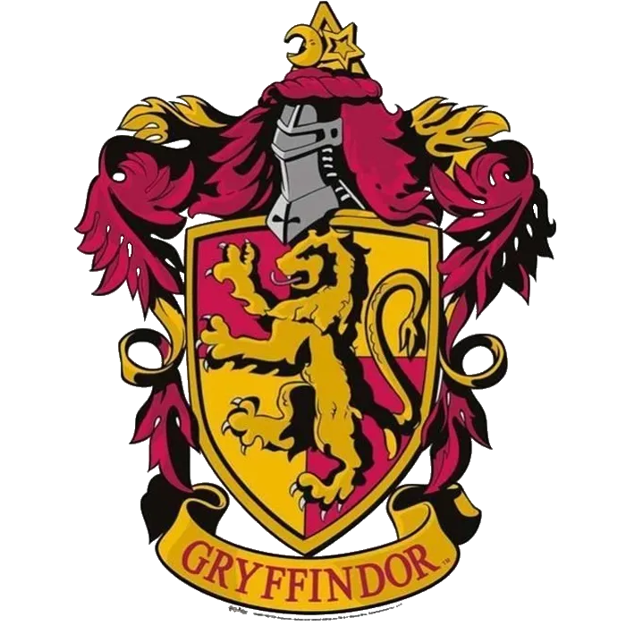
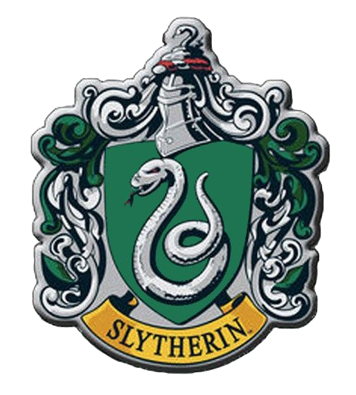
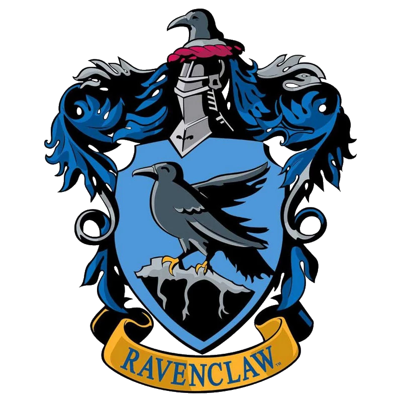
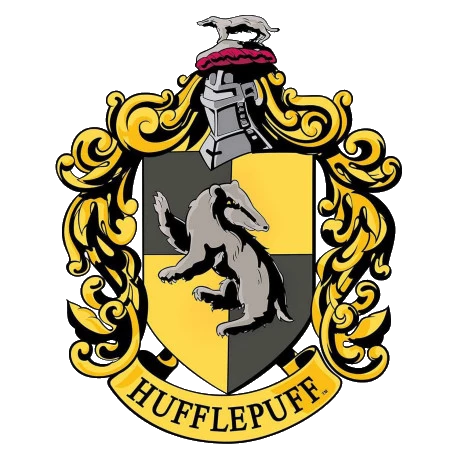

Les quatres maisons




-
Gryffondor (Gryffindor) représente :
le courage, la bravoure, la détermination et la loyauté. -
Serpentard (Slytherin) incarne :
l'ambition, la détermination, la ruse et la malice. -
Serdaigle (Ravenclaw) symbolise :
l'intelligence, la créativité, la sagesse et la curiosité. -
Poufsouffle (Hufflepuff) valorise:
le travail acharné, la loyauté, la patience et la justice.